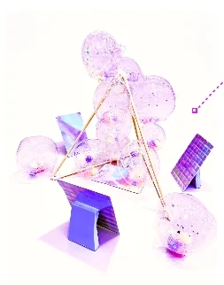
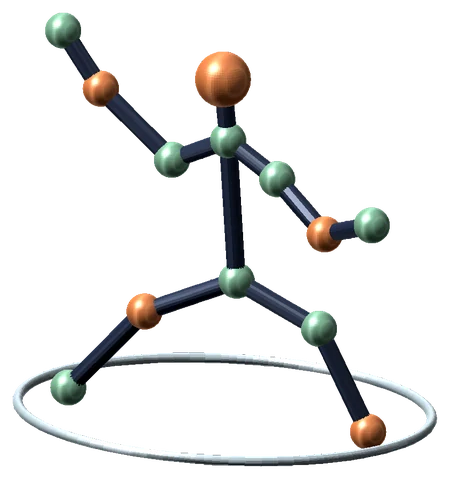

设计如何发生？
站在用户和相关参与者的角度，我们如何理解他们真实的需求、情绪、行为与处境？
从发散的想法走向具体方案时，哪些值得保留，哪些需要舍弃或调整？
不同想法中的局部能否建立新的关联、重新组合，让设计逐渐成形？
面对现有条件，我们如何将洞察转化为概念、场景和解决方案？
我们如何捕捉环境、材料、视觉、交互和情绪中的细微变化，并将其转化为设计判断？
(have fun exploring)

